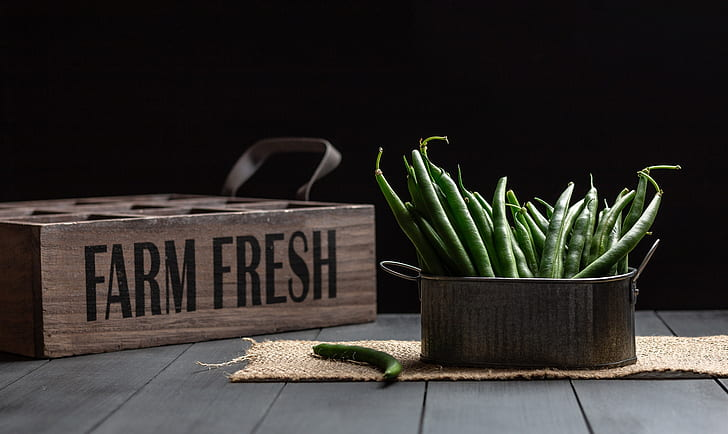

rogue
pickings
About
Menu
Locations
Gallery
Reviews
Contact

Menu
Entrees
Flaming Hummus & Falafel Salad
Crunchy homemade falafel with hummus, tahini, and Israeli salad.
Sizzling Bean Burrito
Sizzling steak burrito layered with Spanish rice, zesty beans and corn, smoky ranch,and much more.
Green Gloves Tamales
A Mexican classic is filled with roasted poblano pepers and spicy pepper jcak cheese.
Greek Godess Cucumber Tomato Salad
Fresh cucumbers, salty feta and simple spices.
Amazing Chicken Avocado Pita Sandwhich
Whole wheat pita, plain greek yogurt, rotisserie chicken, creamy avocado, and baby tomatoes.
Drinks
Fancy Farmer's Cocktail
Cucumber Pioneer
Summer Cobbler Cocktail
Sides
Baked Sweet Potato
Spicy Grilled Brocoli
Summer Orzo
Grilled Corn with Chipotle-Lime Butter
Dessert
Greek Yogurt, Honey & White Chocolate Mousse Cake
Apple Pie
Angel Berry Trifle
Dark Chocolate Orange Brownies